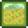
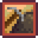
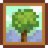
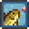
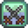
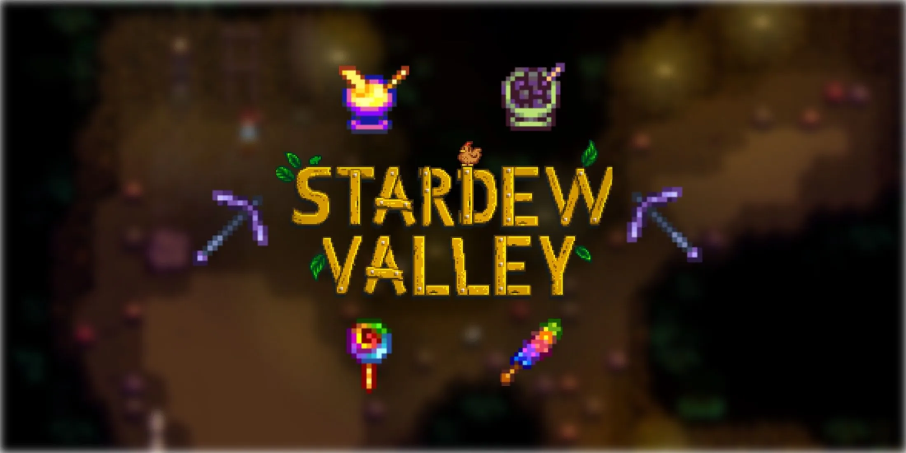

Stardew Valley
Stardew Valley is a farming-life sim where you inherit your
grandfather’s neglected farm in a small town. You clear land, plant
crops, raise animals, and upgrade your home and tools. Beyond farming,
you can explore caves to mine and fight monsters, fish in various spots,
forage for wild goods, and craft items to improve your farm.
The town of Pelican Town is full of characters with their own
stories—you can befriend them, give gifts, complete quests, and even
marry and start a family. The game has four seasons, each with unique
crops, events, and activities, and there’s no strict end, so you can
play at your own pace. It's cozy, rewarding, and rich with content.
The only thing I wish Stardew Valley had was a code of some sort, maybe like the Konami Code...
Skills to level up
-
Farming
- Increases by planting, watering, and harvesting crops or caring for animals. Boosts crop quality, animal product value, and unlocks farming tools and recipes.
-
Mining
- Gained by breaking rocks and collecting ores in the mines. Improves efficiency with a pickaxe and unlocks crafting recipes for better equipment.
-
Foraging
- Leveled by gathering wild plants, chopping trees, and collecting seasonal items. Increases the chance of finding double items and boosts axe efficiency.
-
Fishing
- Raised by catching fish or collecting from crab pots. Improves fishing rod control, increases bite rate, and unlocks fish-related recipes.
-
Combat
- Increases by defeating monsters, mostly in the mines. Boosts health, unlocks stronger weapons, and improves survivability in dangerous areas.





